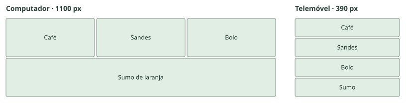

Medidas desta ficha
- Medidas a usar
- Cada cartão parte de 272 px e tem pelo menos 192 px de altura. Entre cartões: 16 px. Dentro do cartão: 12 px.
- Quando muda a disposição
- Sem @media. Quando o cartão seguinte e o intervalo de 16 px não cabem, começa outra fila.
- Resultado esperado
- 390 px: um cartão por fila. 768 px: 2 + 2. 1100 px: 3 + 1; o último ocupa a fila inteira.
Larguras para testar: 390 px, 768 px e 1100 px. São larguras da janela do navegador. Só escreves uma media query se o exercício a pedir.
No CSS: escreve 16px, sem espaço entre o número e a
unidade.
Primeiro passo: Abre style.css no editor e lê a etapa 1.
Quando fizeres uma alteração, guarda o ficheiro e atualiza esta página para veres o que
mudou.
Ver o resultado esperado no computador e no telemóvel
Este esquema mostra as posições, sem escala. Para a largura intermédia, usa os testes no fim.

Área de trabalho · Cartões de produtos
Montra do café
-
Café curto
Um café acabado de tirar.
Bebida 1,20 €
-
Sandes de queijo
Pão de mistura, queijo fresco, tomate e orégãos. Preparada no momento, com a opção de retirar o tomate.
Salgado 3,50 €
-
Bolo de limão
Uma fatia do bolo da casa.
Doce 2,00 €
-
Sumo de laranja
Espremido na hora.
Bebida 2,50 €
Etapas e conceitos desta ficha
Já conheces: Listas e cartões em HTML; margens, altura mínima e espaçamento.
Com apoio nesta ficha: Lê flex: 1 1 272px assim: pode crescer, pode encolher, parte de 272 px. Numa coluna, margin-top: auto ocupa a altura livre acima do rodapé.
- Prepara a lista de quatro produtos
- Define a largura de partida
- Empilha o conteúdo de cada cartão
- Leva os preços para a base
- Alonga uma descrição e repõe o texto
Encontras as instruções de cada etapa em style.css.
Quando é que está pronto?
Usa o modo responsivo do navegador. Experimenta 390 px (telemóvel), 768 px (intermédio) e 1100 px (computador).
Assinala os testes que passaram. As marcas desaparecem quando atualizas a página; guarda o
resultado em registo.md.
Desafio opcional
Garante que a última fila não se estica para preencher todo o espaço. O que muda na primeira fila?